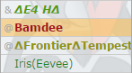
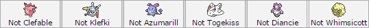
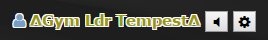

Before we begin, one thing must be emphasized: We have a very strict anti-multileaguing policy!
Multileaguing is the act of being in more than one League at any given period of time. If you are already in another league and wish to join Sora, you have
to pick one of the two. You are also not to join any other league as long as you're a member of the Sora League. This does not count for applicants who were
past members of other leagues, and is currently no longer a member.
If you multileague, you will be found out, and you will be kicked out of Sora.
Sora is also a community before it is a league.
We retain the right to revoke or outright refuse granting membership to users we deem toxic.
Though hopefully this won't happen much, it is a right we readily will evoke when necessary.
Don't worry, though, it takes a lot to tick us off. Most of the time.
First of all, you need a type before you become a Gym Leader or Trainer. You can check the Gym Leaders page to see which type is free, or apply to become a Gym Trainer on an occupied type instead. The latter is not generally recommended, however.
Once you picked a type, PM a member of the Admin Team, and express your interest in joining. They will then test you for your specified
type, which may range from two to three different type weakness tests. Admin Team members have their name highlighted in the server's namelist,
as shown below. Make sure you already have a team! Do note that only Admin Team members can test others, unless otherwise specified by one.

During these tests, applicants are not allowed to change their teams in any manner, shape, and/or form. Winning is not necessary to secure a position
(after all, they're all weakness tests), and instead your goal is to impress the person testing you.

If you pass the tests, you can then proceed to get a Gym Leader alt of your choice, which hopefully wouldn't have been taken yet. The correct format for this
is ∆Gym Ldr [name]∆. Someone will then promote you to the appropriate rank. You can also do /symbols after you are promoted, and you'll automatically get the
symbols added into your name.

If a member was kicked, or left the league three times, they aren't allowed to rejoin.
Certain special circumstances may be accepted after a discussion between the members of the Admin Team.
Gym Leaders are allowed to change types. They need to pass another test for their new type, and if the spot they're after has another leader occupying it, the leader may be challenged to a Best of Three. The winner gets the position competed for. If the old leader manages to defend their spot, they get 3 server bucks (currencies).
The promotional branch splits into two sections from here on. There are monthly tournaments for Gym Leaders aspiring to be Elite 4 or Frontier members. These tournaments are held on the 1st to 7th (E4 Tour) and 8th to 14th (Frontier Tour), respectively. Championing any of these tours will allow Gym Leaders to challenge a person holding their respective position. Every last week of any given month, the Elite Frontier Tournament is held. All Frontiers can participate in this, and the champion is allowed to challenge an Elite Frontier for their position.